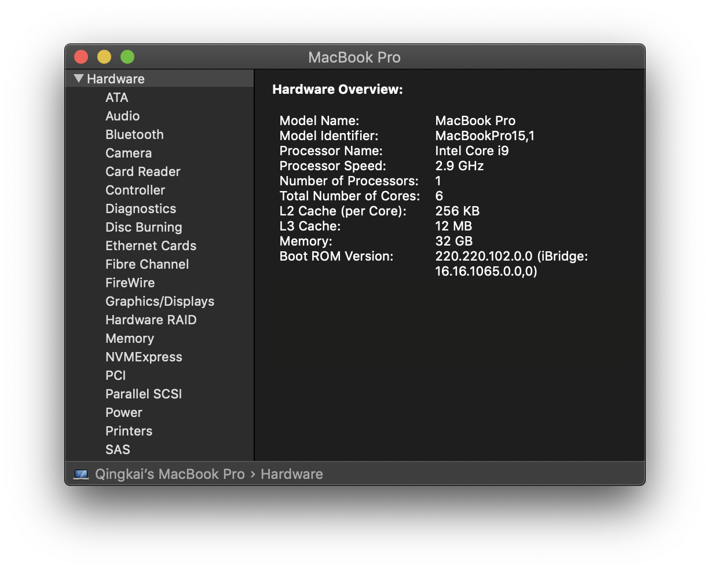

This notebook contains an excerpt from the Python Programming and Numerical Methods - A Guide for Engineers and Scientists, the content is also available at Berkeley Python Numerical Methods.
The copyright of the book belongs to Elsevier. We also have this interactive book online for a better learning experience. The code is released under the MIT license. If you find this content useful, please consider supporting the work on Elsevier or Amazon!
< CHAPTER 13. Parallel Your Python | Contents | 13.2 Mutiprocessing >
Parallel Computing Basics¶
We now have a working knowledge of Python, and soon we will start to use it to analyze data and numerical analysis. Before we go deeper, we need to cover parallel computing in Python. This means you will be able to run your code simultaneously on multiple cores on your CPU processor (or multiple CPU processors) or increase the speed by taking advantage of the wasted CPU cycles while your program is waiting for external resources (i.e., downloading files, API calls, etc.). The fundamental idea of parallel computing is rooted in doing multiple tasks at the same time to reduce the running time of your program. The following figure illustrates the simple idea of doing parallel computing versus serial computing that we used so far. For example, if you have 1 million data files and need to apply the same operations to each one of them, you can do this one file at each time, or you can do it by multiple files at the same time; or if you are downloading 1 million websites, you can take advantage of downloading 10 at a time to reduce the total time of downloading. Therefore, learning the basics of parallel computing will help you design code that is more efficient.

Most of the modern computers are using the multi-core design, which means on a single computing component, there are multiple independent processing units, the so called cores, that are available to do different tasks. For example, on my laptop, there is 1 CPU processor, with 6 physical cores on it (see the following figure), each of this physical cores has two logical cores, which will bring the total number of 12 cores (see the next section when we print out the total number of CPU on your machine).

In Python, there are two basic approaches to conduct parallel computing, that is using the multiprocessing or threading library. Let’s first take a look of the differences of process and thread.
Process and thread¶
A process is an instance of a program (such as Python interpreter, Jupyter notebook etc.). A process is created by the operating system to run program, and each process has its own memory block. A thread is a sub-process that reside within the process. Each process can have multiple threads, that these threads will share the same memory block within the process. Therefore, for multiple threads in a process, due to the shared memory space, the variables or objects are all shared. If you change one variable in one thread, it will change for all the other threads. But things are different in different processes, change one variable in one process will not change the one in other processes. Process and thread both have advantages or disadvantages, and can be used in different tasks to maximize the benefits.
Python’s GIL problem¶
Python has something called Global Interpreter Lock (GIL) which allow only one native thread to run at a time, it prevents multiple threads from running simultaneously. This is because Python was designed before the multi-core processor on the personal computers (this shows you how old the language is). Even though there are workarounds in Python to do multi-threading programming, we will only cover the multiprocessing library in the next section, which we will use most of the time for taking advantage of multi-core parallel computing.
Disadvantage of using parallel computing¶
Of course, there are disadvantages of using parallel computing. Such as, more complicated code, overheads when spawn new processes and maintain the. Thus, if your task is small, using parallel computing will take longer time, since it takes time for the system to initialize new process and maintain them.
< CHAPTER 13. Parallel Your Python | Contents | 13.2 Mutiprocessing >